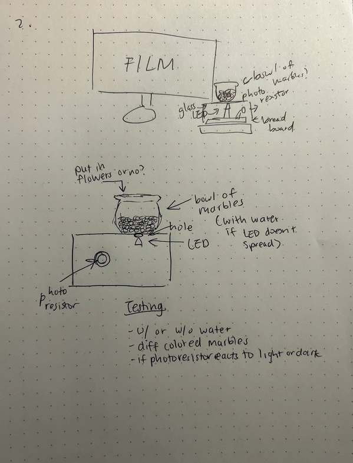
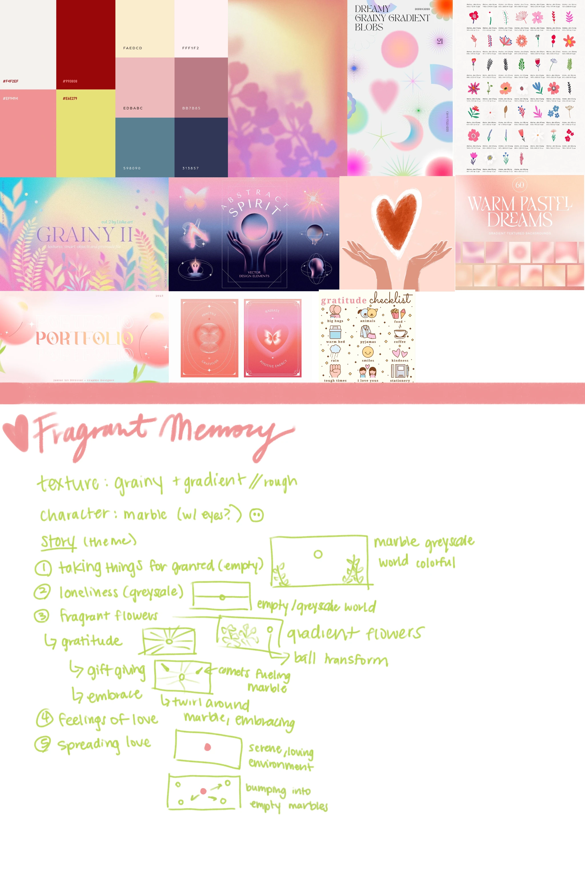

Fragrant Memory - Senior Project
Overview
Fragrant Memory is a 2D motion graphics animation depicting the emotion of love and gratitude through experiences with important people in one's life. Receiving gifts and words of appreciation can be often neglected and underappreciated at times and we don't realize how valuable these things can be in our lives. Sometimes one big gesture of appreciation is all we need to get that feeling of fulfillment and love, and that can be something that encourages us to give back to other people.
This project was presented at NYU Integrated Design & Media's Showcase with an Arduino Installation that gave the audience an option to play the video upon interaction. The Arduino board was covered by a small box with a hole to show the LED light through a jar of marbles. The sides of the boxes were left open to allow individuals to interact with the photosensor with a bouquet of flowers (LED light reacts to darkness), which triggered the start to the video through Processing.
Arduino Installation

Process
Fragrant Memory's weekly process documentation can be found here.
Brainstorm Prompts: emotional experiences, communicate emotions through visual language, gift giving, receiving flowers.
Mood Board and Concept Board

Storyboard (Low Res Prototype)

The storyboard was used as a reference to the beta and alpha prototypes of the animation, presented on a weekly basis to collect feedback to create better iterations.
Some helpful feedback I received throughout the process:
- distinction between cool and warm tones
- wilting plants
- research flowers that represent warmth